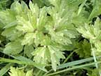
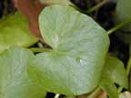
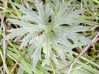
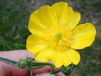
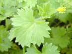

| creeping buttercup | Ranunculus repens |  | |
| celery leaved buttercup | Ranunculus sceleratus |  |
 |
| celandine | Ranunculus ficaria |  | |
| giant buttercup | Ranunculus acris |  |  |
| marsh marigold | Caltha palustris |  |
 |
| small flowered buttercup | Ranunculus parviflorus |  |